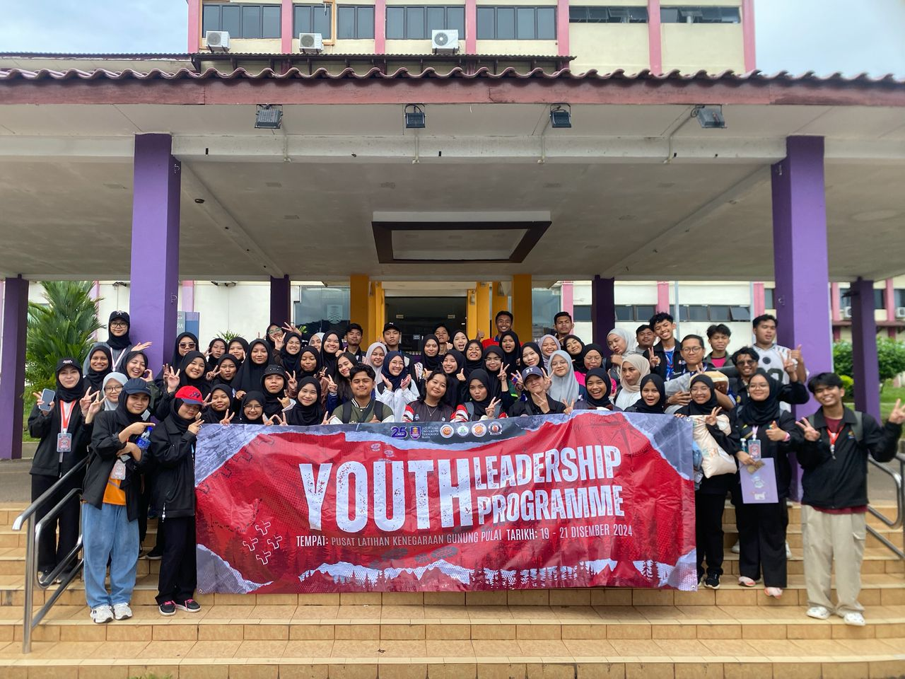
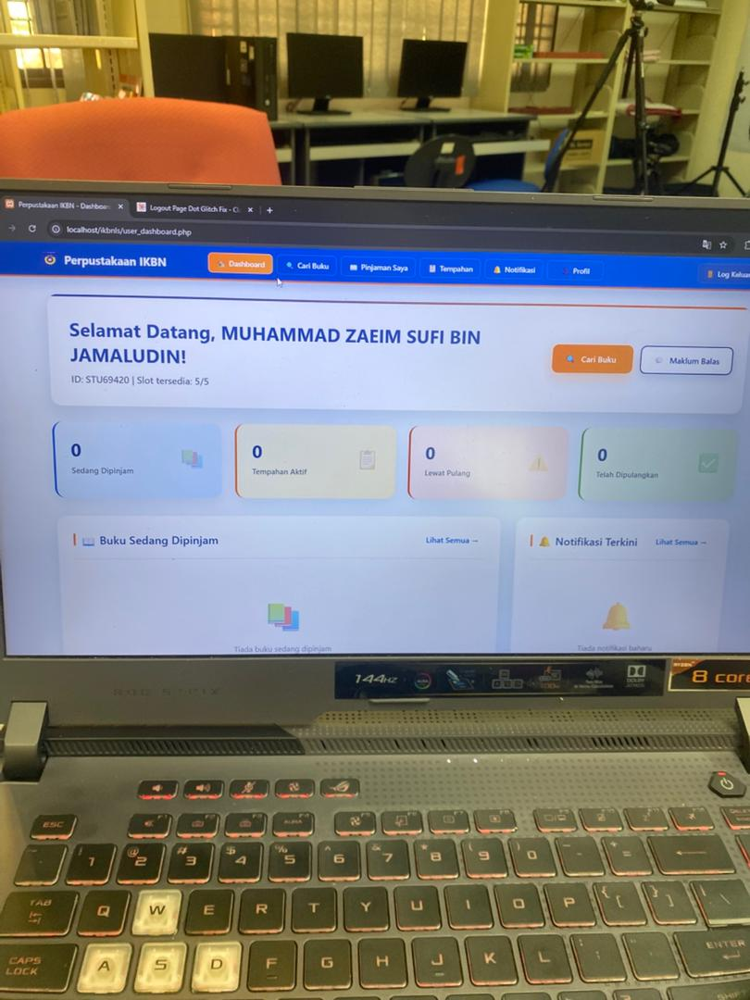
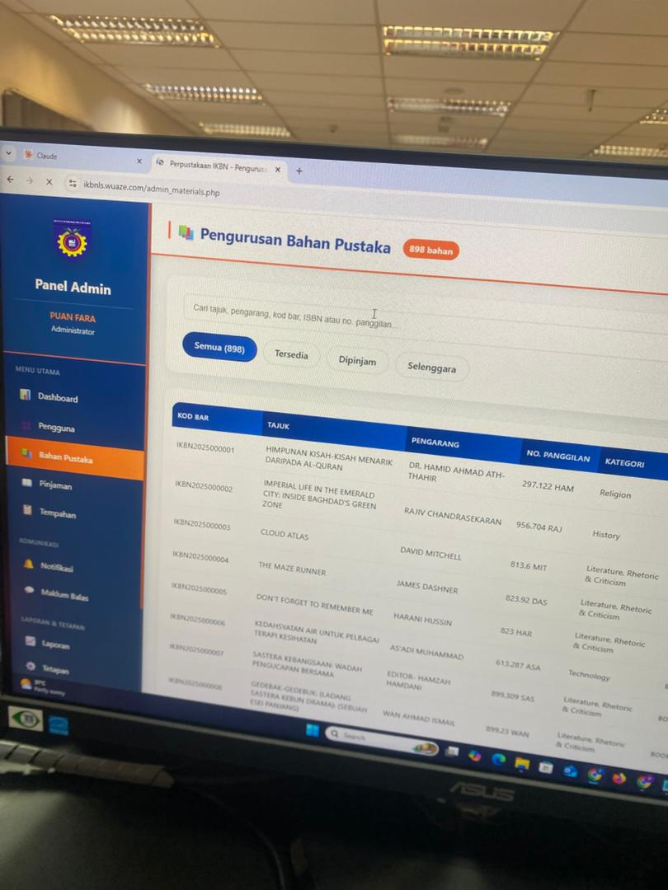
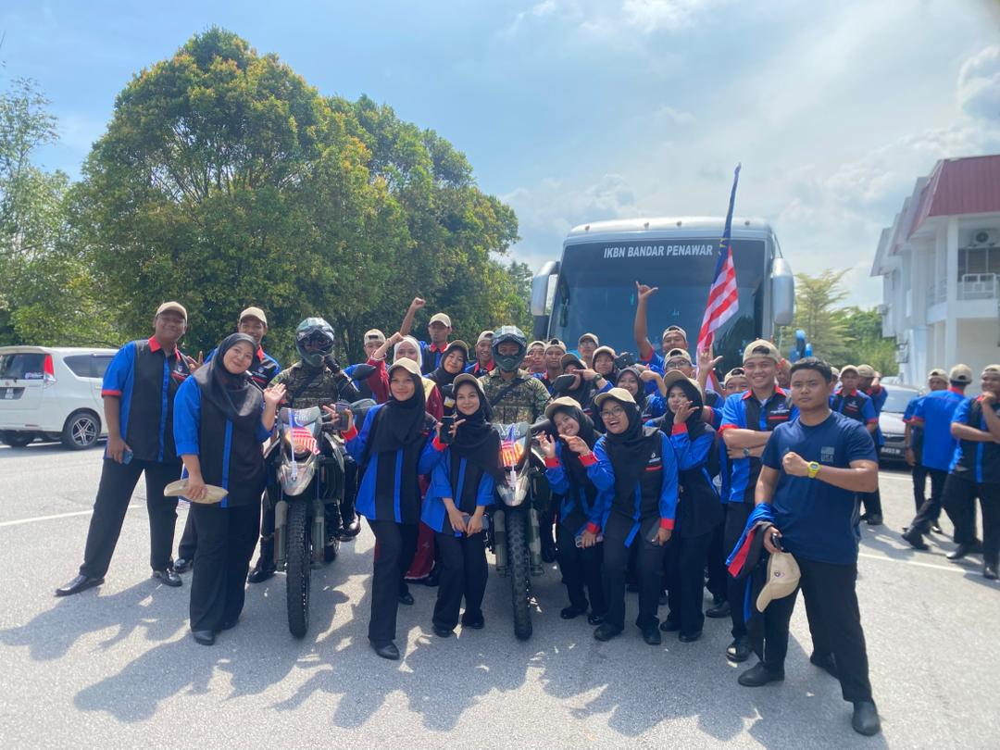
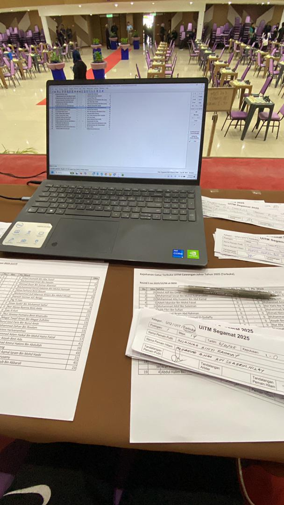

Professional Experience
December 2024


Head of Multimedia
Universiti Teknologi MARA (UiTM) – Sekretariat Rakan Muda UiTMJ, Johor
Led the multimedia team in managing all visual and digital content for the Youth Leadership Programme.
- Led the multimedia team in managing all visual and digital content for the Youth Leadership Programme.
- Designed and produced key promotional materials including banners, posters, and programme shirts to enhance branding and participant experience.
- Created montage videos to capture and showcase the programme’s highlights and achievements.
- Coordinated with event organizers and other departments to ensure multimedia assets aligned with the programme’s objectives and branding guidelines.
- Ensured timely delivery of high-quality creative content that boosted participant engagement and programme visibility.
Banner / Promo
Montage still

Team
28 July 2025 – 19 September 2025
Pegawai Pentadbiran (Administrative Officer) — Internship Trainee
Institut Kemahiran Belia Negara (IKBN) Bandar Penawar
Developed and maintained the IKBN Library System and supported administrative and technical operations during the internship period.
- Developed and maintained the IKBN Library System including database configuration, hosting migration, and interface improvement.
- Classified and imported more than 800 library materials into the digital system using the Dewey Decimal Classification.
- Produced the IKBN digital bulletin “Pena Penawar” and prepared design drafts for supervisor and director review.
- Assisted with administrative and technical duties such as device setup, Google Meet preparation, and library material organization.
- Developed an AI-based photography analysis system and website for the Innovation Program using Claude AI.
- Captured event photography and videography for official IKBN programmes including the Independence Day marching event.

Library System

Digitized materials

Event photo
December 2025


Event Crew • Backstage Manager • Multimedia Handler • Jury Assistant
Open Championship Chess Event — Universiti Teknologi MARA (UiTM) – Sekretariat Rakan Muda, JSP UiTM, Unit Sukan UiTM, & Segamat Chess Association
- Managed backstage operations including player flow, table setup, tournament sequencing, and overall coordination across all 7 rounds.
- Handled multimedia duties by capturing photography, videography, and visual assets used for promotion and official event updates.
- Served as Jury Assistant, responsible for accurately keying in and verifying all 7 rounds of match results into the official chess system.
- Updated the official tournament website with match pairings, player points, rankings, and tiebreak outcomes while maintaining strict data accuracy.
- Managed contestant profiles and score validations using system manager tools to ensure final results were error-free before release.
- Collaborated with Sekretariat Rakan Muda, JSP, Unit Sukan UiTM, and Segamat Chess Association on logistics, technical coordination, and event execution.
- Provided direct support to participants, guiding them on schedules, scoring updates, and competition procedures.

Stage / Setup
Match
Results entry
Leadership Experience
March 2024 - August 2024
Project Leader - Computer System Operation
Final Year Project - UiTM Segamat, Johor
Directed a comprehensive end-to-end computer lab network project, demonstrating strong leadership and technical management skills:
- Led team in designing and implementing computer lab setup including network architecture, hardware selection, and ergonomic layout
- Coordinated multidisciplinary team collaboration, delegating tasks based on strengths and facilitating effective communication
- Managed technical analysis and budget optimization to maximize value within constraints
- Produced and presented professional documentation including technical specs, floor plans, and safety protocols to faculty